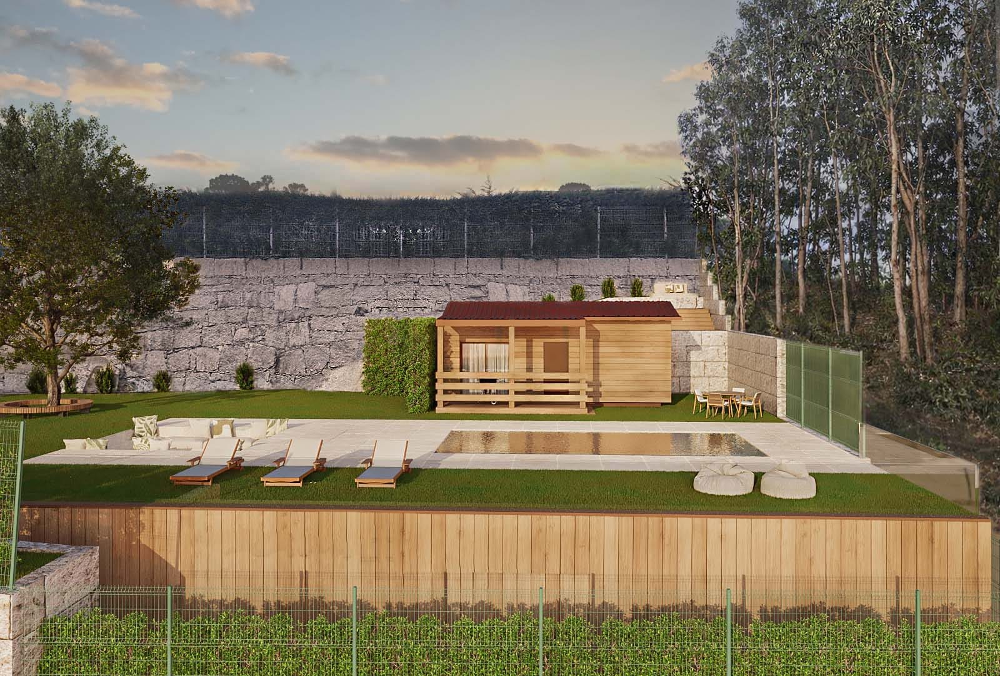
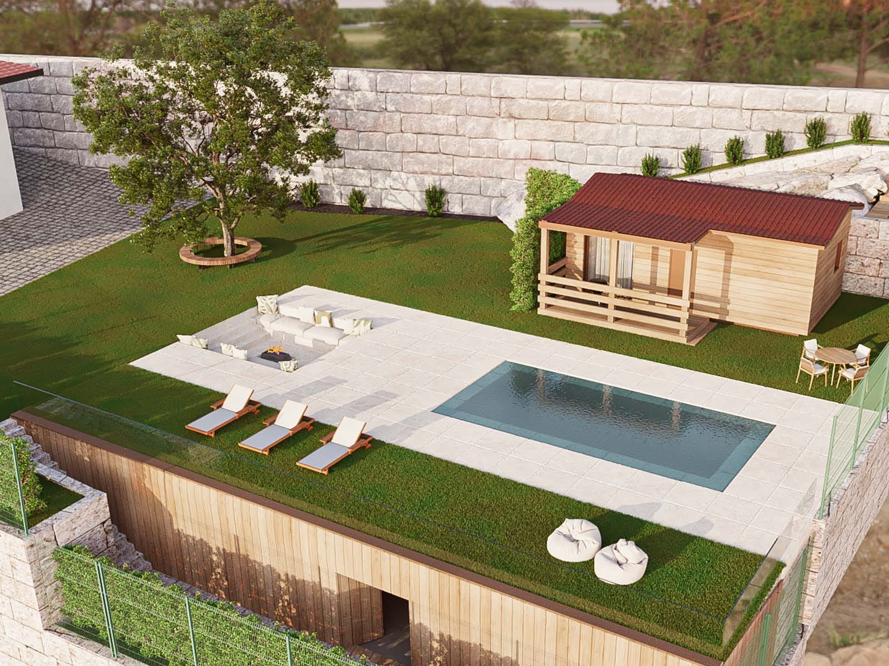

4-6
Guests
Boutique bungalow in Northern Portugal
Martins Bungalow Retreat is a family-run bungalow near Guimaraes for travellers who want garden calm, outdoor living, and a more personal connection to Northern Portugal.
4-6
Guests
Pool
Sun terrace
Wi-Fi
Parking included
15 min
to Guimaraes

Book direct with confidence
The page is designed to do two jobs at once: help guests imagine the stay and make it easy to ask about dates with confidence.
Guests can ask about dates, family needs, or local plans without waiting for a complicated booking flow.
The bungalow is sold together with the region, which makes the stay feel richer and easier to plan.
Short escapes, family breaks, and slower stays all fit naturally into the way the retreat is presented.
Visitors never have to wonder what the next step is, because the direct booking path stays clear throughout the page.
Stay with character
Quiet mornings, outdoor living, and easy access to Guimaraes make the stay feel relaxed from the start.
Wake up to garden views, spend unhurried mornings outside, and enjoy a setting that makes it easy to alternate between rest and day trips.
Whether you are planning a family break, a couples escape, or a longer stay in Northern Portugal, the bungalow is designed to feel practical, private, and warm.
About us
We are Flávio, Karolina, Lara, and Liam — a family that believes in a simpler life, closer to nature and more connected to what truly matters.
I, Flávio, am from Guimarães, a city that has always been part of who I am. I grew up among historic streets, granite, nearby mountains, and that Minho way of living that blends work, family, and a quiet pride in our roots. But at 18, with the desire to see the world and the restlessness of someone who feels there is always more to discover, I left for the Netherlands. It was a decision made with courage, curiosity, and my own way of being in the world: open to the new, the unknown, and the experiences that help us grow.
What began as an adventure became more than 25 years of life in the Netherlands. It was there that I built a large part of my path, where I came to know other ways of living, working, and looking at the world. It was also there that I met Karolina, whom I married and with whom I built our family. Many important chapters of our story were born in the Netherlands, and for that reason it will always be a very special country for us — a country we truly love and that will always be part of our lives.
But as the years went by, we began to feel something else: the need to slow down. To step away from the constant rush, the fast pace, and the pressure of a life always running against the clock. We wanted more time as a family, more space to breathe, and more truth in our days. We wanted to return to a life with more calm, more presence, and more meaning.
And that is how the decision to return to Portugal was born.
Going back was not a retreat. It was a conscious choice. A choice for a life closer to the land, to family, to authenticity, and to the small things. We chose to return to Minho, to Guimarães, to our roots, but also to give life to a dream of ours: to create the bungalow that we now rent and where we welcome those who are looking for rest, nature, and a calmer way of living time. More than accommodation, we wanted to create a space with soul, designed to welcome with simplicity, comfort, and truth.
This new chapter of our story is lived by the four of us, with Lara and Liam growing up among greenery, fresh air, rivers, hills, and the freedom that is sometimes lost in lives that move too fast.
This project comes from that journey. It comes from the desire to share Minho in an honest, simple, and genuine way — not as a tourist postcard, but as a place lived from the inside. A place with soul, with time, with flavour, with genuine people, and with space to create family memories. Together we speak Portuguese, English, Dutch, Spanish, and Polish fluently, which allows us to welcome people from different countries in a simple, close, and genuine way.
At heart, this is our story: a family between two worlds, carrying the best of each and choosing to return to its roots in order to build a life with more soul.
Photo story
A preview of the atmosphere around the bungalow, from garden corners to poolside afternoons and nearby landscapes.


Beyond the bungalow
Martins Bungalow Retreat works well as a base for heritage visits, local food discoveries, and open-air day trips.
Walk the old centre, castle viewpoints, and shaded streets that make easy half-day plans for guests.
Give visitors reasons to book by spotlighting bakeries, markets, vineyards, and relaxed dinner spots.
Hiking routes, picnic stops, and scenic drives help position the bungalow as a practical base for exploring.
Who it suits
One of the easiest ways to improve conversion is to help visitors see themselves here quickly.
The outdoor corners, calm atmosphere, and nearby dining make the retreat easy to picture as a relaxed couples break.
Families can combine pool time, day trips, and practical conveniences without turning the holiday into hard work.
The bungalow also makes sense for guests who want to stay longer and settle into a quieter rhythm in the region.
Ready to ask about dates?
If the bungalow feels like the right fit, the next step is simple: send a quick message and ask about availability.
Journal and blog
Read about the stay, discover local ideas, and start planning the kind of trip that fits this slower corner of Portugal.

Start with the atmosphere of the retreat and the kind of slower stay guests can expect.
Read article
See how local trip ideas help future guests picture their days before they book.
Read article
Food-led inspiration adds personality to the region and gives visitors one more reason to stay.
Read articleBefore you book
Small practical details often decide whether someone makes contact now or leaves the page for later.
Close enough for easy heritage visits, dining plans, and day trips, while still feeling quieter and more private than staying in the centre.
Yes. The current positioning already highlights privacy, outdoor space, pool time, parking, and simple regional outings that suit families well.
Yes. The direct contact approach makes it easy to share ideas for food, local visits, and the kind of pace guests want from the trip.
Email and WhatsApp are both available on the page, so visitors can choose the channel that feels fastest and most comfortable.
Plan the stay
Reach out directly for questions, availability, and local planning before your stay.